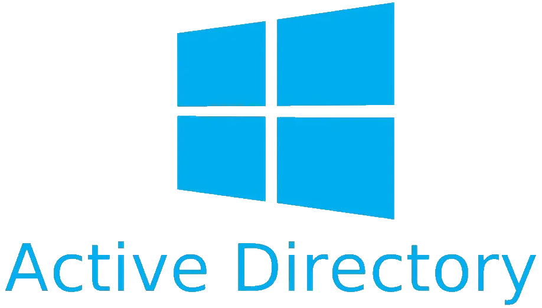

Infrastructure
Neben der Softwareentwicklung beschäftige ich mich intensiv mit klassischen Infrastrukturthemen im Microsoft-Umfeld. Mein Ziel ist es, Anwendungen nicht isoliert zu betrachten, sondern ihre Einbindung in bestehende IT-Landschaften ganzheitlich zu verstehen.
Zu meinen Schwerpunkten gehören Windows Server, Active Directory sowie zentrale Netzwerkdienste wie DNS und DHCP. Dadurch konnte ich ein fundiertes Verständnis für die Verwaltung und Strukturierung moderner Unternehmensnetzwerke aufbauen.
Darüber hinaus beschäftige ich mich mit Benutzer- und Gruppenverwaltung, organisatorischen Einheiten, Gruppenrichtlinien sowie typischen Administrations- und Betriebsaufgaben innerhalb einer Windows-basierten Infrastruktur.
Virtualisierung spielt dabei eine wichtige Rolle. Für Test- und Lernumgebungen nutze ich virtuelle Systeme, um unterschiedliche Szenarien realitätsnah abzubilden und neue Technologien unter praxisnahen Bedingungen zu evaluieren.
Einen besonderen Stellenwert nimmt mein eigenes vLab ein. Dort plane, dokumentiere und betreibe ich verschiedene Infrastrukturkomponenten, um technische Zusammenhänge besser zu verstehen und praktische Erfahrungen im Aufbau komplexerer Umgebungen zu sammeln.
Die Beschäftigung mit Infrastrukturthemen ergänzt meine Entwicklungstätigkeit ideal. Sie ermöglicht es mir, Anwendungen nicht nur zu entwickeln, sondern auch ihre Anforderungen an Netzwerke, Verzeichnisdienste, Berechtigungen und Betriebsprozesse zu berücksichtigen.
Mein Anspruch ist es, Entwicklung und Infrastruktur miteinander zu verbinden. Dadurch entsteht ein umfassender Blick auf moderne IT-Systeme – von der technischen Grundlage über die Administration bis hin zur eigentlichen Anwendung.